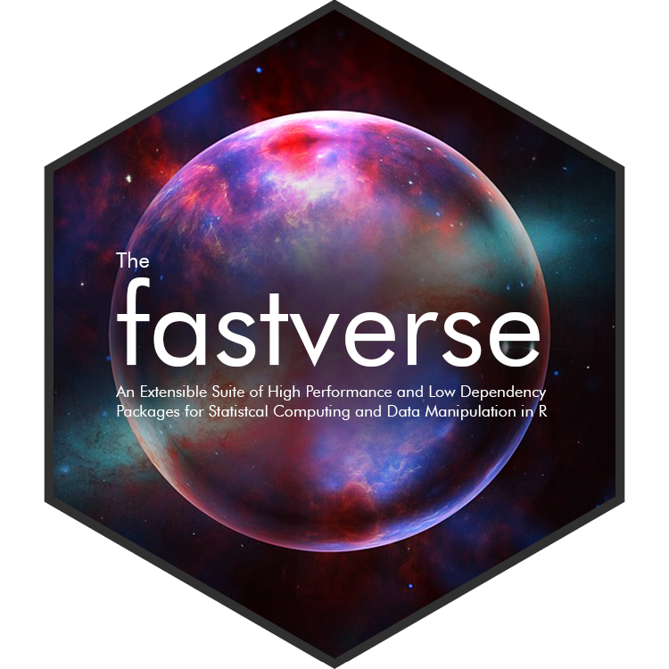

The fastverse is a suite of complementary high-performance packages for statistical computing and data manipulation in R. Developed independently by various people, fastverse packages jointly contribute to the objectives of:
The fastverse package integrates, and provides utilities for easy installation, loading and management
of such packages. It is an extensible framework that allows users to freely (and permanently) add or remove packages to create a ‘verse’ of packages suiting their general needs. Separate ‘verses’ can be created for different projects.
The package thus extends the functionality provided by the tidyverse package, whereas fastverse packages themselves are quite different from tidyverse packages to the extent that they
base and stats.The fastverse installs 6 core packages (data.table, collapse, matrixStats, kit, magrittr and fst) that are attached with library(fastverse). These packages were selected because they provide high quality compiled code for most common statistical and data manipulation tasks, have carefully managed APIs, jointly depend only on base R and Rcpp, and work very well together. The functionality offered by these packages can be summarized as follows:
data.table: Enhanced data frame class with concise data manipulation framework offering powerful aggregation, extremely flexible split-apply-combine computing, reshaping, joins, rolling statistics, set operations on tables, fast csv read/write, and various utilities such as transposition of data.
collapse: Fast grouped & weighted statistical computations, time series and panel data transformations, list-processing, data manipulation functions, summary statistics and various utilities such as support for variable labels. Class-agnostic framework designed to work with vectors, matrices, data frames, lists and related classes i.e. xts, data.table, tibble, pdata.frame, sf.
matrixStats: Efficient row-and column-wise (weighted) statistics on matrices and vectors, including computations on subsets of rows and columns.
kit: Fast vectorized and nested switches, some parallel (row-wise) statistics, and some utilities such as efficient partial sorting and unique values.
magrittr: Efficient pipe operators for enhanced programming and code unnesting.
fst: A compressed data file format that is very fast to read and write. Full random access in both rows and columns allows reading subsets from a ‘.fst’ file.
The package then offers several functions starting with fastverse_ that help manage dependencies, detect namespace conflicts, add/remove packages from the fastverse and update packages:
fastverse_extend()fastverse_detach()fastverse_reset()fastverse_conflicts()fastverse_update()fastverse_packages()fastverse_deps()fastverse_sitrep()options(fastverse.quiet = TRUE) disables all automatic messages (incl. conflict reporting).options(fastverse.styling = FALSE) disables all styling applied to text printed to the console.options(fastverse.extend = c(...)) contains names of packages used to extend the fastverse.As mentioned already, a notable feature of the fastverse is that it is not a ‘rigid’ set of core packages, but can be extended or reduced, temporarily or permanently, globally or for specific projects, thus allowing you to create ‘verses’ of packages to your liking.
Let’s say I have loaded the fastverse and I want to load additionally packages in my R session. I can do that with fastverse_extend(), which has the additional advantage that it checks for conflicts, and I can install any packages not available using install = TRUE before attaching them.
options(fastverse.styling = FALSE) # Disabling coloured output for this post
library(fastverse)
## -- Attaching packages --------------------------------------- fastverse 0.1.8 --
## v data.table 1.14.0 v collapse 1.6.5
## v magrittr 2.0.1 v matrixStats 0.60.0
## v kit 0.0.7 v fst 0.9.4
# Extending the fastverse for the session, installing packages if unavailable
fastverse_extend(fixest, robustbase, xts, roll, ggplot2, Rfast, install = TRUE)
## -- Attaching extension packages ----------------------------- fastverse 0.1.8 --
## v fixest 0.8.4 v roll 1.1.6
## v robustbase 0.93.6 v ggplot2 3.3.5
## v xts 0.12.1 v Rfast 2.0.1
## -- Conflicts ------------------------------------------ fastverse_conflicts() --
## x Rfast::colMads() masks matrixStats::colMads()
## x Rfast::colMaxs() masks matrixStats::colMaxs()
## x Rfast::colMedians() masks robustbase::colMedians(), matrixStats::colMedians()
## x Rfast::colMins() masks matrixStats::colMins()
## x Rfast::colRanks() masks matrixStats::colRanks()
## x Rfast::colVars() masks matrixStats::colVars()
## x xts::first() masks data.table::first()
## x xts::last() masks data.table::last()
## x robustbase::plot() masks graphics::plot(), base::plot()
## x Rfast::rowMads() masks matrixStats::rowMads()
## x Rfast::rowMaxs() masks matrixStats::rowMaxs()
## x Rfast::rowMedians() masks robustbase::rowMedians(), matrixStats::rowMedians()
## x Rfast::rowMins() masks matrixStats::rowMins()
## x Rfast::rowRanks() masks matrixStats::rowRanks()
## x Rfast::rowVars() masks matrixStats::rowVars()
## x Rfast::transpose() masks data.table::transpose()These packages are now part of the fastverse. For example when generating a situation report they and (by default) their direct dependencies are included:
# Generate situation report
fastverse_sitrep()
## -- fastverse 0.1.8: Situation Report -------------------------------- R 4.1.0 --
## * Global config file: FALSE
## * Project config file: FALSE
## -- Core packages ---------------------------------------------------------------
## * data.table (1.14.0)
## * magrittr (2.0.1)
## * kit (0.0.7)
## * collapse (1.6.5)
## * matrixStats (0.60.0)
## * fst (0.9.4)
## -- Extension packages ----------------------------------------------------------
## * fixest (0.8.4 < 0.9.0)
## * robustbase (0.93.6 < 0.93.8)
## * xts (0.12.1)
## * roll (1.1.6)
## * ggplot2 (3.3.5)
## * Rfast (2.0.1 < 2.0.3)
## -- Dependencies ----------------------------------------------------------------
## * DEoptimR (1.0.8 < 1.0.9)
## * digest (0.6.27)
## * dreamerr (1.2.3)
## * glue (1.4.2)
## * gtable (0.3.0)
## * isoband (0.2.5)
## * MASS (7.3.54)
## * mgcv (1.8.36)
## * nlme (3.1.152)
## * numDeriv (2016.8.1.1)
## * Rcpp (1.0.7)
## * RcppArmadillo (0.10.2.1.0 < 0.10.6.0.0)
## * RcppParallel (5.0.2 < 5.1.4)
## * RcppZiggurat (0.1.5 < 0.1.6)
## * rlang (0.4.11)
## * sandwich (3.0.0 < 3.0.1)
## * scales (1.1.1)
## * tibble (3.1.3)
## * withr (2.4.2)
## * zoo (1.8.9)The packages are saved in options("fastverse.extend"). Detaching the fastverse does not (by default) remove packages from the option, but this can be changed with fastverse_detach(..., session = TRUE):
# Extensions are here
options("fastverse.extend")
## $fastverse.extend
## [1] "fixest" "robustbase" "xts" "roll" "ggplot2"
## [6] "Rfast"
# This detaches Rfast and roll, also removing them from options("fastverse.extend")
fastverse_detach(Rfast, roll, session = TRUE)
# This confirms that they were removed
fastverse_packages()
## [1] "data.table" "magrittr" "kit" "collapse" "matrixStats"
## [6] "fst" "fixest" "robustbase" "xts" "ggplot2"
## [11] "fastverse"
# Now detaching all packages
fastverse_detach()
# Attaching again includes extensions except for "Rfast" and "roll"
library(fastverse)
## -- Attaching packages --------------------------------------- fastverse 0.1.8 --
## v data.table 1.14.0 v fst 0.9.4
## v magrittr 2.0.1 v fixest 0.8.4
## v kit 0.0.7 v robustbase 0.93.6
## v collapse 1.6.5 v xts 0.12.1
## v matrixStats 0.60.0 v ggplot2 3.3.5
## -- Conflicts ------------------------------------------ fastverse_conflicts() --
## x matrixStats::colMedians() masks robustbase::colMedians()
## x xts::first() masks data.table::first()
## x collapse::is.regular() masks zoo::is.regular()
## x xts::last() masks data.table::last()
## x robustbase::plot() masks graphics::plot(), base::plot()
## x matrixStats::rowMedians() masks robustbase::rowMedians()
# This detaches all packages and clears all options
fastverse_detach(session = TRUE)Note that it is also possible to extend the fastverse for the session by simply populating options("fastverse.extend") before calling library(fastverse), but using fastverse_extend() is more secure, especially with option install = TRUE.
fasvtverse_extend() and fastverse_detach() both have an argument permanent = TRUE, which can be used to make these changes persist across R sessions. This is implemented using a global configuration file saved to the package directory1.
For example, suppose most of my work involves time series analysis, and I would like to add xts, zoo, roll, and dygraphs to my fastverse. Let’s say I also don’t really use the fst file format, and I don’t really need matrixStats either as I can do most of the time series statistics I need with base R and collapse. Let’s finally say that I don’t want xts::first and xts::last to mask data.table::first and data.table::last.
Then I could permanently modify my fastverse as follows2:
options(fastverse.styling = FALSE)
library(fastverse)
## -- Attaching packages --------------------------------------- fastverse 0.1.8 --
## v data.table 1.14.0 v collapse 1.6.5
## v magrittr 2.0.1 v matrixStats 0.60.0
## v kit 0.0.7 v fst 0.9.4
## -- Conflicts ------------------------------------------ fastverse_conflicts() --
## x collapse::is.regular() masks zoo::is.regular()
# Adding extensions
fastverse_extend(xts, zoo, roll, dygraphs, permanent = TRUE)
## -- Attaching extension packages ----------------------------- fastverse 0.1.8 --
## v xts 0.12.1 v dygraphs 1.1.1.6
## v roll 1.1.6
## -- Conflicts ------------------------------------------ fastverse_conflicts() --
## x zoo::as.Date() masks base::as.Date()
## x zoo::as.Date.numeric() masks base::as.Date.numeric()
## x xts::first() masks data.table::first()
## x collapse::is.regular() masks zoo::is.regular()
## x xts::last() masks data.table::last()
# Removing some core packages
fastverse_detach(data.table, fst, matrixStats, permanent = TRUE)
# Adding data.table again, so it is attached last
fastverse_extend(data.table, permanent = TRUE)
## -- Attaching extension packages ----------------------------- fastverse 0.1.8 --
## v data.table 1.14.0
## -- Conflicts ------------------------------------------ fastverse_conflicts() --
## x data.table::first() masks xts::first()
## x data.table::last() masks xts::last()Note that options("fastverse.extend") is still empty, because we have written those changes to a config file3. Now lets see if our permanent modification worked:
# detach all packages and clear all options
fastverse_detach(session = TRUE)
options(fastverse.styling = FALSE)
library(fastverse)
## -- Attaching packages --------------------------------------- fastverse 0.1.8 --
## v magrittr 2.0.1 v zoo 1.8.9
## v kit 0.0.7 v roll 1.1.6
## v collapse 1.6.5 v dygraphs 1.1.1.6
## v xts 0.12.1 v data.table 1.14.0
## -- Conflicts ------------------------------------------ fastverse_conflicts() --
## x zoo::as.Date() masks base::as.Date()
## x zoo::as.Date.numeric() masks base::as.Date.numeric()
## x data.table::first() masks xts::first()
## x zoo::is.regular() masks collapse::is.regular()
## x data.table::last() masks xts::last()After this permanent modification, the fastverse can still be extend for the session using fastverse_extend(). As long as the current installation of the fastverse is kept, these modifications will persist across R sessions, unless the config file is removed with fastverse_reset(). The fastverse also offers a more persistent mechanism to configure it inside projects:
The fastverse gives you the ability to put together a custom collection of packages for a project and load and manage them with library(fastverse).
To do this you need to include a configuration file named .fastverse (no file extension) inside a project directory, and place inside that file the names of packages to be loaded as core fastvere4.
Using a config file in a project will ignore any global configuration as discussed in the previous section. You can still extend the fastverse inside a project session using fastverse_extend() (or options("fastvers.extend") before library(fastverse)).
The fastverse can be freely extended with any R package, but I have put together a list of suggested high-performance and low-dependency packages in the README file. You are free to contribute to this list, so that it becomes a comprehensive showcase of R’s high-performance world as far as statistical computing and data manipulation is concerned.
Currently, there are 2 different versions of the fastverse on CRAN and GitHub. The GitHub version is recommended if you want to have matrixStats consistently preserve attributes of your matrices: it modifies functions in the matrixStats namespace making them preserve attributes consistently (and by default) whenever the fastverse is attached5. The CRAN version takes matrixStats as it is, which means most functions do not (by default) preserve attributes such as dimension names in computations.
# Install the CRAN version
install.packages("fastverse")
# Install the GitHub version (Requires Rtools)
remotes::install_github("SebKrantz/fastverse")matrixStats is slowly evolving towards greater consistency, but it might take more than half a year until dimension names are handled consistently by default - due to the large number of reverse dependencies. Until then CRAN and GitHub versions of the fastverse are released together.
The fastverse was developed principally for 2 reasons: to promote quality high-performance software development for R, and to provide a flexible approach to package loading and management in R, particularly for users wishing to combine various high-performance packages in statistical workflows.
This post already introduced most of what there is to know about the fastverse. Additional details are found on the website.
# Resetting the fastverse to defaults (clearing all permanent extensions and options)
fastverse_reset()
# Detaching
fastverse_detach()Thus it will be removed when the fastverse is reinstalled.↩︎
I note that namespace conflicts can also be detected and handled with the conflicted package on CRAN.↩︎
When fetching the names of fastverse packages, fastverse_packages first checks any config file and then checks options("fastverse.extend").↩︎
You can place package names in that file any manner you deem suitable: separated using spaces or commas, on one or multiple lines. Note that the file will be read from left to right and from top to bottom. Packages are attached in the order found in the file. Note that all packages to be loaded as core fastverse for your project need to be included in that file, in the order they should be attached.↩︎
The functions which are replaced are contained in a global variable .matrixStats_replaced, available in the GitHub version. Replacement happens whenever the fastverse is attached, regardless of whether matrixStats was attached before or is attached with the fastverse. Only if matrixStats is removed from the fastverse with fastverse_detach(matrixStats, permanent = TRUE) the functions will not be modified in the GitHub version.↩︎